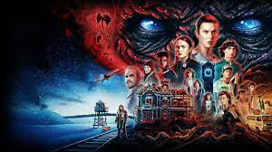

PRISON BREAK:
Sinopsis:
Lincoln Burrows es acusado de ser el autor de un crimen que él dice no haber cometido: asesinar a Terrence Steadman, el hermano de la vicepresidenta de los Estados Unidos. Lincoln es sentenciado a muerte y enviado a la Penitenciaría Estatal Fox River, para cumplir allí su condena hasta el día de su ejecución. Michael Scofield, el hermano menor de Lincoln, está convencido de la inocencia de su hermano y elabora un plan de escape de la prisión. Después de haber planeado la fuga, Michael roba un banco a mano armada para que lo encarcelen en Fox River. Dentro de la cárcel debe llevar a cabo su plan, pero debe superar obstáculos, sobrevivir en prisión y aliarse con otros presos para poder escapar con su hermano de la prisión antes de su fecha de ejecución. Mientras, fuera de la cárcel la abogada Veronica Donovan, amiga de infancia de los hermanos, hace todo lo posible para aclarar la conspiración que llevó a Lincoln a la cárcel, pero los agentes secretos de una organización conocida como la Compañía, hacen lo imposible para obstaculizar el trabajo de Verónica.
Trailer
Numero de temporadas:
Prison Break tiene un total de 5 temporadas y 91 episodios
Protagonistas:
Michael Scofield, interpretado por Wentworth Miller
Lincoln Barrows, interpretado por Dominic Purcell
Sara Tancredi, interpretada por Sarah Wayne
Fernando Sucre, interpretado por Amaury Nolasco
Donde ver esta serie:
Reseña media
4/5
Stranger things:
Sinopsis:
Stranger Things (originalmente titulada Montauk) es una serie de televisión dramática de misterio que está ambientada en una localidad de Indiana. Dicho lugar adquiere fama por los extraños acontecimientos que están sucediendo, similares a los del 'Proyecto Montauk', un supuesto proyecto secreto llevado a cabo por el gobierno de los Estados Unidos en el que se realizaban experimentos con la finalidad de desarrollar técnicas de guerra psicológica.
La historia narra la súbita desaparición de un niño en esta ciudad durante la década de los 80, hecho que destapa los extraños sucesos que tienen lugar en la zona, producto de una serie de experimentos que realiza el gobierno. Además, en la ciudad aparecen fuerzas sobrenaturales inquietantes y una niña muy perturbadora.
Trailer
Numero de temporadas:
Stranger Things tiene un total de 5 temporadas y 34 episodios
Protagonistas:
Eleven, interpretada por Millie Bobby Brown
Will Byers, interpretado por Noah Schnapp
Mike Wheeler, interpretad por Finn Wolfhard
Dustin Henderson, interpretado por Gaten Matarazzo
Donde ver esta serie:

Reseña media
4/5
13 Reasons why:

Sinopsis:
Netflix nos sumerge en un drama que golpea de lleno a la sociedad joven actual, en el que trata todos los conflictos a los que se enfrentan: bullying o machismo. Así como a las cuestiones sociales y de diversidad en cuanto al amor o la homosexualidad, tratados de una forma natural. Todas ellas se redondean con un tema casi tabú como el suicidio, principal protagonista con una fuerte dosis emocional en forma de cinta.
Un día Clay Jensen, uno de estos adolescentes, llega a su casa cuando se encuentra con una misteriosa caja de zapatos sin remitente. Intrigado, decide abrirla y se encuentra con una serie de cintas de cassette, al parecer grabadas por Hannah Baker, una compañera de clase que se suicidó dos semanas antes.
Hannah escogió a 13 compañeros para contarles su historia, aquellos 13 a los que culpa de lo que pasó. Gracias a unas instrucciones que dejó en la caja, las cintas deberían llegar a todos ellos para que escucharan una verdad que ninguno quiere oir: las trece razones por las que decidió quitarse la vida.
13 Reasons Why, es una adaptación de la famosa novela homónima de Jay Asher. El reparto está formado por Katherine Langford, Dylan Minnette (Perdidos) Brandon Flynn, Christian Navarro, Alisha Boe (Ray Donovan), Justin Prentice (Malibu Country), Devin Druid, Miles Heizer (Parenthood) y Ross Butler; y Selena Gómez participa como productor ejecutivo.
Trailer
Numero de temporadas:
13 Reasons Why tiene un total de 4 temporadas y 49 episodios
Protagonistas:
Clay Jensen, interpretado por Dylan Minnette
Hannah Baker, interpretada por Katherine Langford
Jessica Davis, interpretada por Alisha Boe
Justin Foley, interpretado por Brandon Flynn
Donde ver esta serie:

Reseña media
4/5
The Walking Dead:
Sinopsis:
La historia de The Walking Dead nos traslada a un escenario post-pandémico en el que un virus ha acabado con la práctica totalidad de la población mundial convirtiéndolos en zombis. Seremos testigo de la lucha de un grupo de supervivientes por mantenerse a salvo en este entorno infestado de zombis o, como ellos prefieren llamarlos, caminantes.
Nuestro protagonista, Rick Grimes es un policía que despierta de un estado comatoso y encuentra este desolador panorama. Su única razón para seguir adelante es encontrar a su mujer Lori y a su hijo Carl . Ambos, que siguen vivos, están en un grupo de supervivientes en el que también se encuentra el ex compañero de patrulla y mejor amigo de Rick, Shane Walsh con el que Lori, creyendo a su marido muerto, tiene un romance.
La serie, basada en los cómics de Robert Kirkman, cuenta además con varias comunidades de personas supervivientes que han intentado seguir con sus vidas a pesar de estar en peligro constante con los caminantes y otros enemigos peores que los propios infectados.
Trailer
Numero de temporadas:
The Walking Dead tiene un total de 11 temporadas y 177 episodios
Protagonistas:
Rick Grimes, interpretado por Andrew Lincoln
Daryl Dixon, interpretado por Norman Reedus
Carl Grimes, interpretado por Chandler Riggs
Carol Peletier, interpretada por Melissa McBride
Donde ver esta serie:
Reseña media
5/5
Peaky Blinders:
Sinopsis:
Peaky Blinders es un drama de BBC que narra la historia de la familia gitana Shelby y su banda de gángsters, un grupo de personas características por sus boinas con cuchillas y dueñas de los asuntos ilegales, que dominan las apuestas clandestinas y se rigen mediante extorsiones.
La historia comienza en el Birmingham (Reino Unido) de los años 20 cuando un joven Tomas (Tommy) Shelby regresa de la guerra tras combatir contra los franceses para ocuparse del negocio familiar regentado, durante su ausencia, por su tía Polly Gray.
Sin embargo, una vez que llega a su tierra, todo son problemas. Dirigir un negocio criminal no es tarea fácil, y menos si aún están presente las secuelas psicológicas que conlleva estar en la guerra. Además, los desencuentros políticos hacen que se cree una brecha entre su mejor amigo de la infancia Freddie, con ideas comunistas, y su hermana Ada, quienes mantienen una relación a espaldas de la familia y, sobre todo, de Tommy.
Las disputas también aparecen en el terreno de lo profesional, pues tiene varios encontronazos con diferentes enemigos, siendo el más importante un capitán de policía recién llegado de Belfast que se ha propuesto limpiar el lugar de criminales, gángsters y todo aquel que esté en contra de las leyes que dicta el país, siendo su principal cometido el de recuperar unas armas interceptadas por los Shelby.
Peaky Blinders está protagonizada por la estrella Cillian Murphy, protagonista de Luces rojas; y Sam Neill (Plan de Escape). Además, el creador y guionista de la serie se trata nada menos que de Steven Knight, creador de la historia de Promesas del Este.
Trailer
Numero de temporadas:
Peaky Blinders tiene un total de 6 temporadas y 36 episodios
Protagonistas:
Tommy Shelby, interpretado por Cillian Murphy
Arthur Shelby, interpretado por Paul Anderson
Polly Gray, interpretada por Helen McCrory
John Shelby, interpretado por Joe Cole
Alfie Solomons, interpretado por Tom Hardy
Donde ver esta serie:
Reseña media
5/5
Sons Of Anarchy:
Sinopsis:
Aclamado drama muy a la americana creado por Kurt Sutter ('The Shield'), que se colocó rápidamente en lo más alto de la cadena FX en lo que a series de ficción se refiere. Narra las aventuras de los Hijos de la Anarquía, una banda de moteros con su propio código de moral a los que no les importa cometer actos criminales y atroces con tal de su subsistencia.
La serie se centra en la sede original de los Hijos de la Anarquía, los Redwood Original, fundadores de la banda, con base actual en Charming, California. El protagonista es Jackson 'Jax' Teller (Charlie Hunnam, 'Queer As Folk', 'Hooligans'), vicepresidente de la banda, hijo de uno de los difuntos fundadores de la banda y adoptado por Clay Morrow (Ron Perlman, 'Hellboy', 'Drive'), co-fundador de la banda que se casó con la madre de Jax, Gemma Teller (Katey Sagal, 'No con mis hijas', 'Perdidos') tras esta quedarse esta viuda.
Esta asociación para amantes de las dos ruedas es mucho más que un simple club de moteros. Su actividad delictiva ha ido 'in crescendo' desde su nacimiento y las sedes se han ido extendiendo hasta contar con miembros alrededor de todo el globo. Sin embargo, tras el incendio de uno de sus almacenes, Jax empieza a rechazar la idea de sus actividades criminales, de su pertenencia a la banda, e incluso de su simple existencia.
Trailer
Numero de temporadas:
Sons Of Anarchy tiene un total de 7 temporadas y 92 episodios
Protagonistas:
Jax Teller, interpretado por Charlie Hunnam
Clay Morrow, interpretado por Ron Perlman
Gemma Teller, interpretado por Katey Sagal
Opie Winston, interpretada por Ryan Hurst
Donde ver esta serie:
Reseña media
5/5